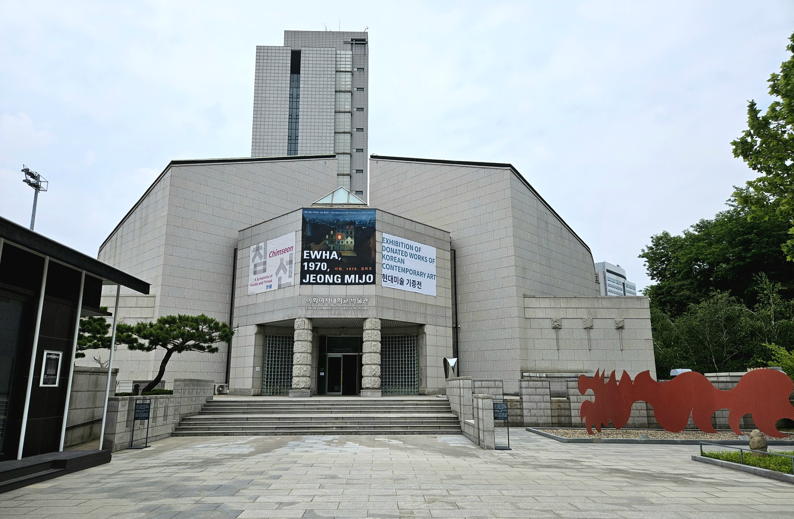

Museum Pathfinder
박물관 전시 동선 추천 서비스

본 서비스에서는 관람객이 직접 선택한 전시물과 비교하여
'시대', '재료', '종류', '유물을 나타내는 형용사'
가
많이 일치하는 전시물을 선택합니다
선택된 전시물들을 볼 수 있는 동선을
'전시 관람 가능 시간'
과
'전시 관람 목적'
에 따라
다르게 추천해드립니다.
(관람을 마치신 후, 설문조사 응답 부탁드립니다)
추천받으러가기